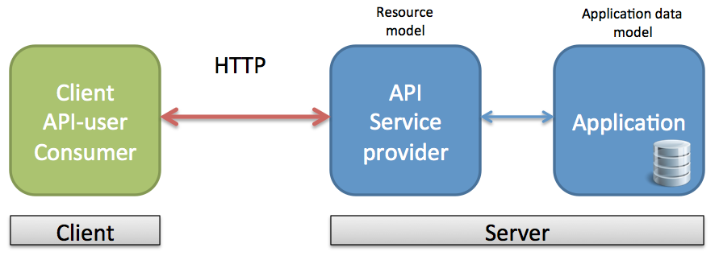

Webbramverk, 1DV450
Linnéuniversitetet, vt 2014
JavaScriptramverk
AngularJS
Examinationen
- Torsdag - release, zipfil, se till att allt är med!
- Under fredagen delas projekten ut för peer-review (anonymt)
- En vecka på sig. Besvara ett formulär (ej klart)
- Registrera sig för den schemalagda examinationstid på kurshemsidan
- 20-30 minuter muntlig examination
Vad bygger vi?

Förklara hur jag gjort om kursen.
Lite ny mark
Ny webb, nya tekniker, nya krav

Förklara hur webben har utvecklats
JavaScript har utvecklats. Snabbare, stöd
SPA
CSS frameworks

Varför? vad gör dessa?
Ny webb, nya tekniker, nya krav
- DOM-manipulering
- Offline
- State change in client application
- Partial page update
- Server communication (AJAX, Web Sockets)
- Bookmarking, deep-link, route-handling
- Browser history
- More complex javascript software
SPA
JavaScrip frameworks

AngularJS

Min erfarenhet av javascriptramverk
Varför valde jag angular?

AngularJS - Historik
Vem, vad, community, utveckling
The team

Filosofi och designmål
- Deklarativ programmering för UI (beskriv VAD som ska göras - inte HUR)
- Imperativ programmering för affärslogik (beskriv steg för steg vad som ska göras)
- Använd och utöka HTML - Utvecklare och designers
- Data-bindning
- Koppla från DOM-manipulering från applikationslogik
- Separation mellan klient och server
- Modulärt
AngularJS - Vad löser det?
- DOM-hantering (jqLite)
- Data Binding
- Routing
- Browser History
- Ajax
- Modularisering
- Cachning
- Testing
- ...
Vad ingår i angular
Massa ord!
- Directive
- Scope
- Filters
- Controller
- Model
- Declarative template view
- Dependency injection
- Modules
- Services, factories, providers

Visa hello world
Prata om directives
Bygg vidare med lista på lag
MVC / MVVM / MVW
- MVC är en högnivåarkitektur
- Har många "varianter" (MVP, MVVM)
- Har många tolkningar av olika utvecklare
- AngularJS == MVW

Visa exempel där man skapar en controller
i inline script
Prata om scope

Inspired:
http://weblogs.asp.net/dwahlin/archive/2013/04/12/video-tutorial-angularjs-fundamentals-in-60-ish-minutes.aspx
Routing
- Ladda ner angular-route.js
- Inkludera ngRoute som modul i din applikation
- Definiera dina routes i applikationens "config"
- Flyttades ut från angular.js core från 1.2 RC1
Partial views
- SPA laddar om states i en och samma sida
- Vi vill kunna tala om vad som ska laddas in

Exempel
Services
- Services
- Factories
- Providers
Applikationsstruktur
Visa ett practice på hur man strukturerar en javascript
applikation
Nästa gång
- Jobba mot ett RESTful API
 Denna presentation är licensierat under en
Creative Commons Erkännande 3.0 Unported Licens. (Där inte annat anges)
Denna presentation är licensierat under en
Creative Commons Erkännande 3.0 Unported Licens. (Där inte annat anges)